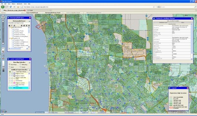
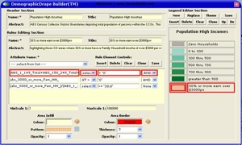

OpenLayers 2
OpenLayers 2
OpenLayers 2.x is not under active development any more. Go to http://openlayers.org/en/latest/doc/ to view the latest OpenLayers 3.x docs.
NuMaps is an Australian based startup company that publishes Australian Bureau Statistics (ABS) Census data as DemographicDrapes(TM) which are simply semi-transparent thematic map overlays. These are provided as WMS services for those who have OGC enabled GIS products/spatial applications. NuMaps initially considered using the Google Maps API but preferred to use OpenLayers as it supported access to any number of different base map suppliers and it provided a robust interface to OGC published services.
One of the key components of the decision to use OpenLayers was the support for OGC enabled web services. OGC (Open Geospatial Consortium) compatibility was and remains strategically important. OGC compatibility allows NuMaps to support the widest range of end user client applications now and moving forward into the future. OpenLayers support of OGC web services helped make the library a natural choice as a basis for the application.
In addition to using OGC data sources along with Google Maps base layers, as a Google Ads partner NuMaps can also seamlessly integrate with other free Google services, such as geocoding and Google Charts, from within an Openlayers application. This ability to use and combine multiple services is one of the key strengths of using OpenLayers as a web mapping framework.
NuMaps uses a CubeWerx WMS backend. CubeWerx is the most OGC compliant Server environment on the market. The combination of CubeWerx backend and Openlayers as a preferred applications envionment allowed NuMaps to achieve the interoperability that was sought, along with the scalability to support an increasing client base. Using technology like Styled Layer Descriptors (SLD), NuMaps can communicate styling information to the CubeWerx WMS server on the fly. NuMaps’ use of SLD, which describes rules and filters for styling data, allows subscribed Internet users to modify external DempographicDrape Filters [SLDs], creating custom map themes and styles to suit the need of their applications, in addition to using the many standard pre-configured DemographicDrapes already available.
Beyond the DemographicDrapes provided to subscribers, certain DemographicDrapes are provided free of charge via an Openlayers online viewer application. The intended users of this service range between those interested in simple demographic browsing on top of a Google Maps base map to serious demographers who need to access DemographicDrapes as component layers in their overall geo-demographic analysis processes.
Armed with the tools provided by OpenLayers and CubeWerx, NuMaps is also in the business of providing specific Openlayers applications that access the DemographicDrapes hosted by NuMaps. With the help of many different DemographicDrape layers, an application was developed to assist a Government Agency to determine where they should place health services for indigenous people. This application supported the interactive aggregation of polygon-based statistics. OpenLayers allowed NuMaps to develop custom controls to create easy to follow workflows. These custom controls allowed a custom built application to fulfill the rich needs of the user, while maintaing a simplicity of the user interface not typically seen in more complex geoprocessing tools.
NuMaps is an avid user of OpenLayers, and looks forward to continuing to use OpenLayers as time goes on.
For more information contact: